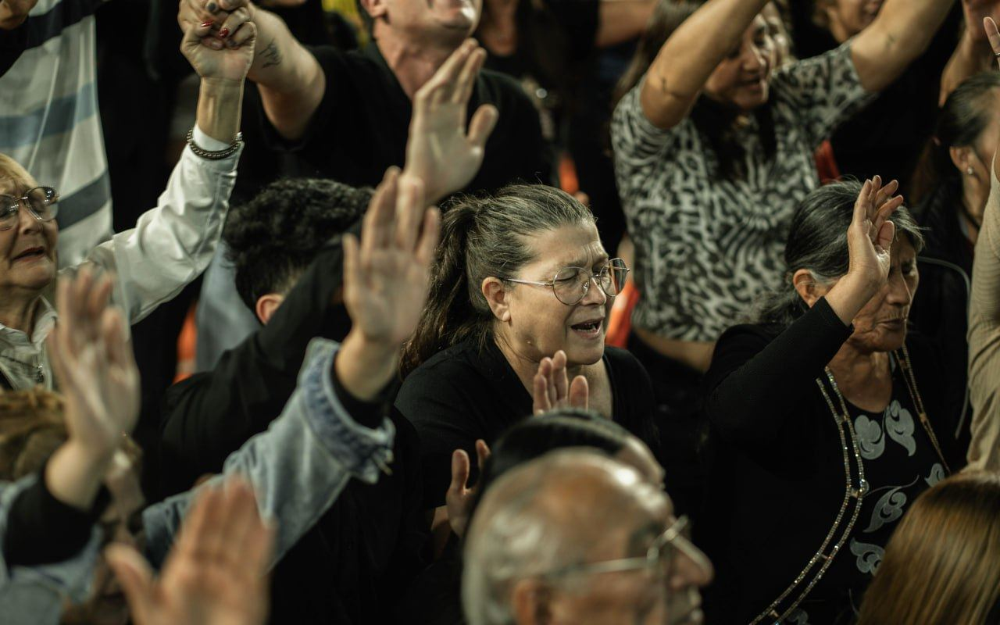
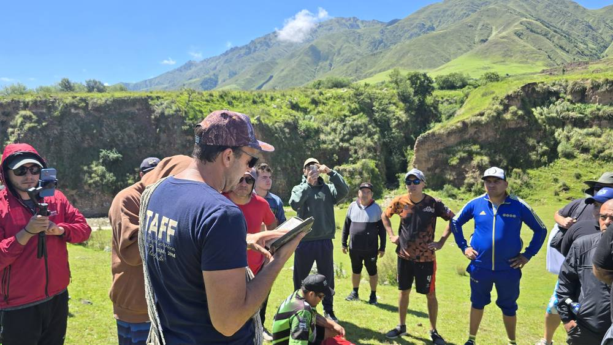

Despertando la identidad del varón cristiano
Fernando Aragón tiene un llamado especial hacia los hombres. En encuentros, conferencias y retiros específicos para varones, desafía a los hombres a recuperar su identidad, abrazar su llamado y dejar un legado que trascienda generaciones.
Invitar al ministerio de hombres →Fernando Aragón tiene un llamado especial hacia los hombres. En encuentros, conferencias y retiros específicos para varones, desafía a los hombres a recuperar su identidad, abrazar su llamado y dejar un legado que trascienda generaciones.
Invitar al ministerio de hombres →
Completá el formulario de contacto y el equipo se comunicará a la brevedad para coordinar los detalles.
Invitar al ministerio de hombres →